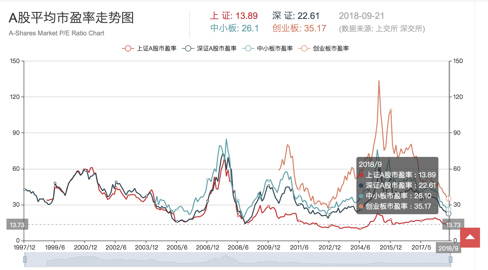

28. A 股哪些公司被低估了？
股票价格会围绕股票的内在价值上下波动，有时候股价会超出其内在价值，形成高估，有时又会低于其内在价值，形成低估。股价是很容易看到的外在表现，但内在的价值谁也没法做出准确的计算，怎么去看股票的价格和价值是否匹配呢？我们可以用估值水平来衡量。在前面的章节中，我们已经学习过股票估值的基本知识，对股票估值的影响因素有了一定的了解，这节课我们将继续结合 A 股实际，帮助投资者对目前 A 股各版块的估值进行评估，看看他们的估值是否合理。
股票估值的方法有很多种，大致可分为两类，一类是绝对估值法，又称之为内在价值法，主要采用现金流折现方法，将预期产生的现金流折算成现值，比如之前讲过的股利贴现 DDM 模型，原则上讲是可以通过预测未来现金流，然后按照一定的参数来折现获得股票的合理价格，但我这么一说你肯定也有感觉，要预测这些数实在太难了，参数选取非常复杂，一般投资人很难做到，做到了也很难准确。这个模型的主要意义不在于计算一个数值，而在于给我们提供一个分析框架，看看股票到底受哪些因素影响。
另一类是相对估值法，又称之为乘数估值法，比如大家常听到的市盈率（P/E，当前股价/每股收益）、市净率（P/B，当前股价/每股净资产）等就是乘数。相对估值法是目前资本市场上最常用的估值方法，简洁有效，方便对比。但是，相对估值也存在一定的局限性，使用的时候要注意几个原则：
第一，不能对每个行业都套用一个指标，有的行业适合看市盈率，有的可能更适合看市净率。比如，对亏损企业而言，市盈率为负，是没有参考意义的。又比如，很多高科技企业或者服务性企业，他们没什么重资产，有很多品牌、技术、管理等无形资产，所以净资产一般偏低，市净率估值不太适用。
第二，不同行业的估值逻辑不一样，所以同一指标差异可能会很大，不能直接比较。分析行业估值时，必须要结合宏观经济、行业发展与基本面等因素综合分析，如果符合政策和经济转型的导向、发展前景好、市场空间巨大，必然会有一定的溢价，估值的指标高一点也是合理的。比如，现在 TMT 等新兴行业前景远比传统产业好，所以估值通常较高，通信行业近五年市盈率均值为 48.17 倍，而金融行业仅为 6.17 倍，这并不能说明通信行业整体被高估了，或者金融行业被低估了。
在实际分析中，估值对比有两个维度：一是和国外对比，由于各国市场基础不同，这个对比意义不大。二是和自身的历史数据进行对比，这个可以作为一个比较有效的参考。
我们整理了近五年的 A 股整体和申万 28 个一级行业月度滚动市盈率（TTM）的最高值、最低值、均值，和现值进行比较。先看 A 股市场整体，最近 1 个月滚动市盈率为 17 倍，与历史均值十分接近，表明经过股灾的调整后，A 股整体估值已回到相对合理的水平。其中上证主板、中小板和创业板的市盈率分别为 14 倍、32 倍和 43 倍，当前均值比分别为 108%、79% 和 70%，可以看出经过一轮经济复苏和周期行情之后，上证的估值现在已经回到历史正常水平，而中小板和创业板低于历史均值。
VeryCB 注：本节课程更新于 2018 年 5 月，上述数据均为截至 4 月份的数据。最新的数据（截至 2018 年 9 月 21 日）如下：
上证 A 股市盈率：13.89，中小板市盈率：26.1，创业板市盈率：35.17。
从行业维度来看，分化较为严重。我们拿最近 1 个月的市盈率与 5 年均值的比值作为参考指标，如果这个指标大于 100%，说明市盈率偏高，反之则偏低。申万 28 个一级行业大致可分为四类：
第一类是均值比大于 100%，行业估值处于相对高位。比如食品饮料行业，2017 年受益于经济复苏、微观涨价和消费升级等因素，全年板块涨幅最高，高达 55.57%，这直接导致目前的估值均值比达到 121%，也就是说估值已经明显高于历史均值。结合目前经济基本面回落，通胀放缓的背景，这种消费板块实际上是需要警惕的。
第二类是均值比大于 80%，小于 100%，行业估值中等。比如家用电器，当前均值比为 93.62%，也就是说估值略低于历史均值，但考虑到行业竞争越来越激烈，价格战导致行业经营效益下滑，所以这个估值低一点也算合理。但是，未来这些行业内部的龙头和其他公司估值会分化。医药生物行业当前均值比为 90.51%，也低于历史均值，考虑到未来老龄化带动医疗需求加大，以及医疗改革的推进，医药生物这个估值空间比家电要更大一些。
第三类是当前均值比大于 50%，小于 80%，行业估值偏低。比如电子行业，由于下游终端需求不及预期叠加全球市场震荡影响，行业估值处于低位，当前均值比为 70.82%。往后看，中兴危机后，我国高度重视半导体产业发展，而目前我国半导体产业的自给率才只有不到 10%，《中国制造2025》的目标是 2020 年自给率达 40%，可以预见，这个估值未来还有相当空间。传媒板块由于外延并购放缓影响业绩增速，当前均值比为 56.11%，处于低位。
第四类是当前均值比小于 50%，估值处于历史的底部。但是，位于底部也得分情况来看是否有空间。一类低估值可能是常态，比如钢铁行业市盈率只有 10 倍，和历史的均值比为 30.23%，一方面是因为经济下台阶，钢铁需求不足，另一方面是因为产能过剩，去产能压力大。往后看，房地产和基建的高峰期已过，整个经济从工业向服务业转型，这种重工业低估值可能依然是常态。另一类是确实比较低估的，比如汽车行业估值也处于历史低位，均值比在所有板块中最低，为 28.36%，主要是因为行业前两年有点透支，经济下行，再加上自主技术不够，导致业绩受到影响。但是往后看，如果国内车企能够完成自主技术转型升级，市场空间还是很有潜力的。
最后，对今天的课程进行简要总结，股票估值分为绝对估值法和相对估值法，各有优缺点，目前以市盈率为代表的相对估值法最为常见。从市盈率来看，目前 A 股整体估值水平较为合理。从行业来看，汽车、家用电器、医药生物、通信、电子、传媒等行业估值相对处于历史较低位置。